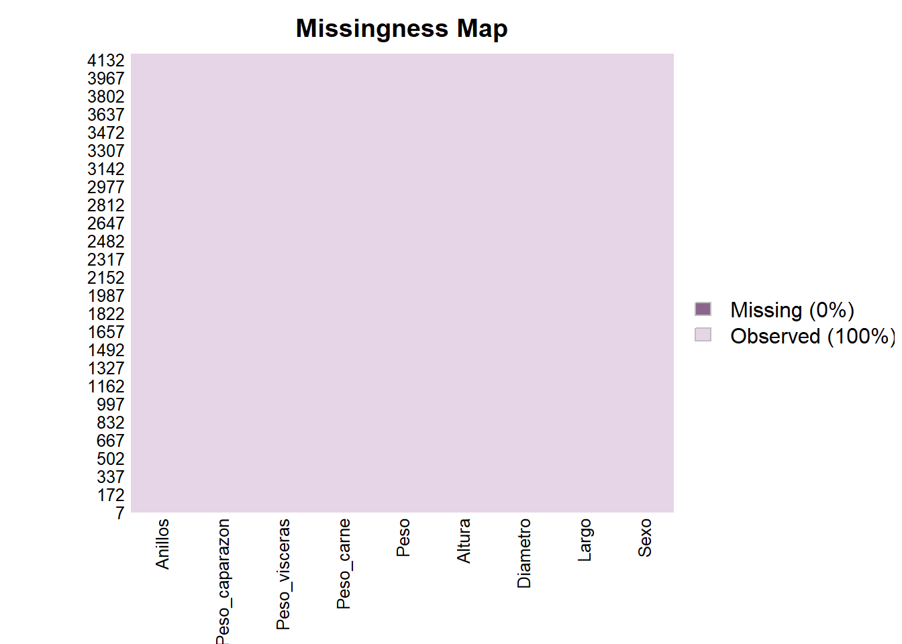

Exploración y Análisis de las Características de los Abalones
2026-09-17
Chapter 1 EDA
#Libreria
## Warning: package 'tidyverse' was built under R version 4.5.3## Warning: package 'ggplot2' was built under R version 4.5.3## ── Attaching core tidyverse packages ──────────────────────── tidyverse 2.0.0 ──
## ✔ dplyr 1.1.4 ✔ readr 2.1.5
## ✔ forcats 1.0.0 ✔ stringr 1.5.1
## ✔ ggplot2 4.0.3 ✔ tibble 3.3.0
## ✔ lubridate 1.9.4 ✔ tidyr 1.3.1
## ✔ purrr 1.1.0
## ── Conflicts ────────────────────────────────────────── tidyverse_conflicts() ──
## ✖ dplyr::filter() masks stats::filter()
## ✖ dplyr::lag() masks stats::lag()
## ℹ Use the conflicted package (<http://conflicted.r-lib.org/>) to force all conflicts to become errors## Warning: package 'Amelia' was built under R version 4.5.3## Cargando paquete requerido: Rcpp## Warning: package 'Rcpp' was built under R version 4.5.3## ##
## ## Amelia II: Multiple Imputation
## ## (Version 1.8.3, built: 2024-11-07)
## ## Copyright (C) 2005-2026 James Honaker, Gary King and Matthew Blackwell
## ## Refer to http://gking.harvard.edu/amelia/ for more information
## #### Warning: package 'moments' was built under R version 4.5.2## Warning: package 'patchwork' was built under R version 4.5.3## Warning: package 'GGally' was built under R version 4.5.3## Warning: package 'effsize' was built under R version 4.5.3## Warning: package 'openintro' was built under R version 4.5.3## Cargando paquete requerido: airports## Warning: package 'airports' was built under R version 4.5.3## Cargando paquete requerido: cherryblossom## Warning: package 'cherryblossom' was built under R version 4.5.3## Cargando paquete requerido: usdata## Warning: package 'usdata' was built under R version 4.5.3##
## Adjuntando el paquete: 'openintro'
##
## The following object is masked from 'package:GGally':
##
## tips## Warning: package 'nortest' was built under R version 4.5.2## Warning: package 'car' was built under R version 4.5.3## Cargando paquete requerido: carData## Warning: package 'carData' was built under R version 4.5.3##
## Adjuntando el paquete: 'car'
##
## The following object is masked from 'package:openintro':
##
## densityPlot
##
## The following object is masked from 'package:dplyr':
##
## recode
##
## The following object is masked from 'package:purrr':
##
## some## Warning: package 'rstatix' was built under R version 4.5.3##
## Adjuntando el paquete: 'rstatix'
##
## The following object is masked from 'package:stats':
##
## filter## Warning: package 'coin' was built under R version 4.5.3## Cargando paquete requerido: survival
##
## Adjuntando el paquete: 'survival'
##
## The following object is masked from 'package:openintro':
##
## transplant
##
##
## Adjuntando el paquete: 'coin'
##
## The following objects are masked from 'package:rstatix':
##
## chisq_test, conover_test, fligner_test, friedman_test,
## kruskal_test, sign_test, wilcox_test##Primera data
data <- read.csv("C:/Users/Mariana/OneDrive/Desktop/PROYECTO FINAL/PROYECTOFINAL/PROYECTOFINAL/abalone/abalone.data", header=FALSE)##Exploración inicial de los datos
## V1 V2 V3 V4 V5 V6 V7 V8 V9
## 1 M 0.455 0.365 0.095 0.5140 0.2245 0.1010 0.150 15
## 2 M 0.350 0.265 0.090 0.2255 0.0995 0.0485 0.070 7
## 3 F 0.530 0.420 0.135 0.6770 0.2565 0.1415 0.210 9
## 4 M 0.440 0.365 0.125 0.5160 0.2155 0.1140 0.155 10
## 5 I 0.330 0.255 0.080 0.2050 0.0895 0.0395 0.055 7## V1 V2 V3 V4 V5 V6 V7 V8 V9
## 4173 F 0.565 0.450 0.165 0.8870 0.3700 0.2390 0.2490 11
## 4174 M 0.590 0.440 0.135 0.9660 0.4390 0.2145 0.2605 10
## 4175 M 0.600 0.475 0.205 1.1760 0.5255 0.2875 0.3080 9
## 4176 F 0.625 0.485 0.150 1.0945 0.5310 0.2610 0.2960 10
## 4177 M 0.710 0.555 0.195 1.9485 0.9455 0.3765 0.4950 12## [1] 4177 9## [1] "V1" "V2" "V3" "V4" "V5" "V6" "V7" "V8" "V9"## 'data.frame': 4177 obs. of 9 variables:
## $ V1: chr "M" "M" "F" "M" ...
## $ V2: num 0.455 0.35 0.53 0.44 0.33 0.425 0.53 0.545 0.475 0.55 ...
## $ V3: num 0.365 0.265 0.42 0.365 0.255 0.3 0.415 0.425 0.37 0.44 ...
## $ V4: num 0.095 0.09 0.135 0.125 0.08 0.095 0.15 0.125 0.125 0.15 ...
## $ V5: num 0.514 0.226 0.677 0.516 0.205 ...
## $ V6: num 0.2245 0.0995 0.2565 0.2155 0.0895 ...
## $ V7: num 0.101 0.0485 0.1415 0.114 0.0395 ...
## $ V8: num 0.15 0.07 0.21 0.155 0.055 0.12 0.33 0.26 0.165 0.32 ...
## $ V9: int 15 7 9 10 7 8 20 16 9 19 ...##Cambio de nombres de las variables
data2 <- data %>%
rename(
Sexo = V1,
Largo = V2,
Diametro = V3,
Altura = V4,
Peso = V5 ,
Peso_carne = V6,
Peso_visceras = V7 ,
Peso_caparazon = V8,
Anillos = V9
)
head(data2)## Sexo Largo Diametro Altura Peso Peso_carne Peso_visceras Peso_caparazon
## 1 M 0.455 0.365 0.095 0.5140 0.2245 0.1010 0.150
## 2 M 0.350 0.265 0.090 0.2255 0.0995 0.0485 0.070
## 3 F 0.530 0.420 0.135 0.6770 0.2565 0.1415 0.210
## 4 M 0.440 0.365 0.125 0.5160 0.2155 0.1140 0.155
## 5 I 0.330 0.255 0.080 0.2050 0.0895 0.0395 0.055
## 6 I 0.425 0.300 0.095 0.3515 0.1410 0.0775 0.120
## Anillos
## 1 15
## 2 7
## 3 9
## 4 10
## 5 7
## 6 8##Segunda data
## 'data.frame': 4177 obs. of 9 variables:
## $ Sexo : chr "M" "M" "F" "M" ...
## $ Largo : num 0.455 0.35 0.53 0.44 0.33 0.425 0.53 0.545 0.475 0.55 ...
## $ Diametro : num 0.365 0.265 0.42 0.365 0.255 0.3 0.415 0.425 0.37 0.44 ...
## $ Altura : num 0.095 0.09 0.135 0.125 0.08 0.095 0.15 0.125 0.125 0.15 ...
## $ Peso : num 0.514 0.226 0.677 0.516 0.205 ...
## $ Peso_carne : num 0.2245 0.0995 0.2565 0.2155 0.0895 ...
## $ Peso_visceras : num 0.101 0.0485 0.1415 0.114 0.0395 ...
## $ Peso_caparazon: num 0.15 0.07 0.21 0.155 0.055 0.12 0.33 0.26 0.165 0.32 ...
## $ Anillos : int 15 7 9 10 7 8 20 16 9 19 ...## [1] 4177 9## [1] "Sexo" "Largo" "Diametro" "Altura"
## [5] "Peso" "Peso_carne" "Peso_visceras" "Peso_caparazon"
## [9] "Anillos"##Valores faltantes
## NA_Sexo NA_Largo NA_Diametro NA_Altura NA_Peso NA_Peso_carne NA_Peso_visceras
## 1 0 0 0 0 0 0 0
## NA_Peso_caparazon NA_Anillos
## 1 0 0
#InterpretaciónLa tabla permite identificar la cantidad de datos faltantes presentes en cada variable. El mapa de datos faltantes permite visualizar de manera gráfica la presencia o ausencia de estos valores. Si todas las variables presentan un valor de 0, significa que la base de datos no contiene datos faltantes y, por lo tanto, no es necesario realizar un proceso de imputación.
##Conversión de variables
## 'data.frame': 4177 obs. of 9 variables:
## $ Sexo : Factor w/ 3 levels "F","I","M": 3 3 1 3 2 2 1 1 3 1 ...
## $ Largo : num 0.455 0.35 0.53 0.44 0.33 0.425 0.53 0.545 0.475 0.55 ...
## $ Diametro : num 0.365 0.265 0.42 0.365 0.255 0.3 0.415 0.425 0.37 0.44 ...
## $ Altura : num 0.095 0.09 0.135 0.125 0.08 0.095 0.15 0.125 0.125 0.15 ...
## $ Peso : num 0.514 0.226 0.677 0.516 0.205 ...
## $ Peso_carne : num 0.2245 0.0995 0.2565 0.2155 0.0895 ...
## $ Peso_visceras : num 0.101 0.0485 0.1415 0.114 0.0395 ...
## $ Peso_caparazon: num 0.15 0.07 0.21 0.155 0.055 0.12 0.33 0.26 0.165 0.32 ...
## $ Anillos : int 15 7 9 10 7 8 20 16 9 19 ...##Análisis exploratorio de la variable respuesta
data2 %>%
summarise(
n = length(Anillos),
media = mean(Anillos),
sd = sd(Anillos),
mediana = median(Anillos),
RIC = IQR(Anillos),
Q1 = quantile(Anillos, 0.25),
Q3 = quantile(Anillos, 0.75),
minimo = min(Anillos),
maximo = max(Anillos),
asimetria = skewness(Anillos),
curtosis = kurtosis(Anillos)
)## n media sd mediana RIC Q1 Q3 minimo maximo asimetria curtosis
## 1 4177 9.933684 3.224169 9 3 8 11 1 29 1.113702 5.326462# Interpretación
La media representa el número promedio de anillos de los individuos de la muestra, mientras que la mediana representa el valor central de la distribución.La desviación estándar permite observar qué tan dispersos se encuentran los valores de Anillos respecto a su media. Por otra parte, el rango intercuartílico representa la dispersión del 50 % central de las observaciones.
Los valores mínimo y máximo permiten identificar el rango en el que se encuentra el número de anillos.La asimetría permite determinar si la distribución se encuentra desplazada hacia alguno de sus extremos. Si la asimetría es positiva, existe una mayor concentración de valores pequeños y una cola hacia valores grandes. La curtosis permite analizar el
comportamiento de la distribución respecto a su concentración y presencia de valores extremos.
data2 %>% ggplot(aes(x = Anillos)) +
geom_histogram(
aes(y = after_stat(density)),
binwidth = 1,
fill = "#FFE1FF",
color = "#CD96CD",
alpha = 0.6
) +
geom_density(
color = "#8B668B",
linewidth = 1.2
) +
labs( title = "Distribución del número de anillos",
x = "Número de anillos",
y = "Densidad"
) +
theme_bw() #Interpretación
#Interpretación
El histograma permite observar la distribución de la variable Anillos. Se puede identificar en qué valores se concentra la mayor cantidad de observaciones y cómo disminuye la frecuencia hacia los extremos.La curva de densidad permite visualizar de manera más clara la forma general de la distribución.
data2 %>%
ggplot(aes(y = "", x = Anillos)) +
geom_boxplot( fill = "#FFE1FF", color = "#CD96CD" ) +
stat_summary( fun = mean,
geom = "point",
shape = 20, size = 3,
color = "#8B668B" ) +
labs( title = "Diagrama de caja del número de anillos", x = "Número de anillos", y = "" ) +
theme_bw() #Interpretación.
#Interpretación.
El diagrama de caja permite observar la mediana, los cuartiles y la dispersión de la variable Anillos. Los puntos que aparecen alejados del resto de las observaciones pueden representar posibles valores atípicos.La posición de la media
respecto a la mediana también permite complementar el análisis de la forma de la distribución.
##Análisis de las variables independientes
data2 %>%
select(where(is.numeric), -Anillos) %>%
pivot_longer( cols = everything(),
names_to = "variable",
values_to = "valor" ) %>%
group_by(variable) %>%
summarise( n = length(valor),
media = mean(valor),
sd = sd(valor),
mediana = median(valor),
RIC = IQR(valor),
Q1 = quantile(valor, 0.25),
Q3 = quantile(valor, 0.75),
minimo = min(valor), maximo = max(valor), asimetria = skewness(valor), curtosis = kurtosis(valor)
)## # A tibble: 7 × 12
## variable n media sd mediana RIC Q1 Q3 minimo maximo asimetria
## <chr> <int> <dbl> <dbl> <dbl> <dbl> <dbl> <dbl> <dbl> <dbl> <dbl>
## 1 Altura 4177 0.140 0.0418 0.14 0.05 0.115 0.165 0 1.13 3.13
## 2 Diametro 4177 0.408 0.0992 0.425 0.13 0.35 0.48 0.055 0.65 -0.609
## 3 Largo 4177 0.524 0.120 0.545 0.165 0.45 0.615 0.075 0.815 -0.640
## 4 Peso 4177 0.829 0.490 0.800 0.712 0.442 1.15 0.002 2.83 0.531
## 5 Peso_ca… 4177 0.239 0.139 0.234 0.199 0.13 0.329 0.0015 1.00 0.621
## 6 Peso_ca… 4177 0.359 0.222 0.336 0.316 0.186 0.502 0.001 1.49 0.719
## 7 Peso_vi… 4177 0.181 0.110 0.171 0.160 0.0935 0.253 0.0005 0.76 0.592
## # ℹ 1 more variable: curtosis <dbl>#Interpretación
El resumen estadístico permite comparar las diferentes características físicas de los abalones. Las variables de longitud, diámetro y altura permiten describir las dimensiones físicas de los individuos, mientras que las variables de peso
permiten analizar diferentes componentes de su masa. La comparación entre la media y la mediana permite identificar
posibles asimetrías. Además, los valores mínimo y máximo permiten conocer el rango de cada variable.
##Boxplots de las variables independientes
data2 %>%
ggplot(aes(y = "", x = Largo)) +
geom_boxplot( fill = "#FFE1FF", color = "#CD96CD" ) +
stat_summary( fun = mean,
geom = "point",
shape = 20,
size = 3,
color = "#8B668B" ) +
labs( title = "Largo", x = "Largo", y = "" ) +
theme_bw() -> p1data2 %>%
ggplot(aes(y = "", x = Diametro)) +
geom_boxplot( fill = "#FFE1FF", color = "#CD96CD" ) +
stat_summary( fun = mean,
geom = "point",
shape = 20, size = 3,
color = "#8B668B" ) +
labs( title = "Diámetro", x = "Diámetro", y = "" ) +
theme_bw() -> p2data2 %>%
ggplot(aes(y = "", x = Altura)) +
geom_boxplot( fill = "#FFE1FF", color = "#CD96CD" ) +
stat_summary( fun = mean,
geom = "point",
shape = 20,
size = 3,
color = "#8B668B" ) +
labs( title = "Altura", x = "Altura", y = "" ) +
theme_bw() -> p3data2 %>%
ggplot(aes(y = "", x = Peso)) +
geom_boxplot(fill = "#FFE1FF",color = "#CD96CD") +
stat_summary(fun = mean,
geom = "point",
shape = 20,
size = 3,
color = "#8B668B") +
labs(title = "Peso total", x = "Peso",y = "") +
theme_bw() -> p4data2 %>%
ggplot(aes(y = "", x = Peso_carne)) +
geom_boxplot( fill = "#FFE1FF", color = "#CD96CD" ) +
stat_summary( fun = mean,
geom = "point",
shape = 20,
size = 3,
color = "#8B668B" ) +
labs( title = "Peso de la carne", x = "Peso de la carne", y = "" ) + theme_bw() -> p5data2 %>%
ggplot(aes(y = "", x = Peso_visceras)) +
geom_boxplot( fill = "#FFE1FF", color = "#CD96CD" ) +
stat_summary( fun = mean,
geom = "point",
shape = 20,
size = 3,
color = "#8B668B" ) +
labs( title = "Peso de las vísceras", x = "Peso de las vísceras", y = "" ) + theme_bw() -> p6data2 %>%
ggplot(aes(y = "", x = Peso_caparazon)) +
geom_boxplot( fill = "#FFE1FF", color = "#CD96CD" ) +
stat_summary( fun = mean,
geom = "point",
shape = 20,
size = 3,
color = "#8B668B" ) +
labs( title = "Peso del caparazón", x = "Peso del caparazón", y = "" ) + theme_bw() -> p7##Comparación de los boxplots
 #Interpretación
#Interpretación
Los diagramas de caja permiten comparar la distribución y dispersión de las diferentes características físicas.Las
variables relacionadas con el peso pueden presentar valores alejados de la concentración principal de los datos. Estos
valores deben ser identificados como posibles observaciones atípicas y no necesariamente como errores.Las variables de
dimensiones físicas permiten observar la variabilidad en el tamaño de los individuos de la muestra.
##Análisis de la variable categórica Sexo
## Sexo n Porcentaje
## 1 F 1307 31.29
## 2 I 1342 32.13
## 3 M 1528 36.58data2 %>%
ggplot(aes(x = Sexo)) +
geom_bar( fill = "#FFE1FF", color = "#CD96CD" ) +
labs( title = "Distribución del sexo", x = "Sexo", y = "Frecuencia" ) + theme_bw()
#Interpretación
El gráfico permite observar la cantidad de individuos pertenecientes a cada categoría de Sexo. La comparación de las frecuencias permite determinar si existe un predominio de alguna categoría o si la distribución de los individuos es relativamente equilibrada.
##Análisis bivariado
data2 %>%
ggplot(aes(x = Largo, y = Anillos)) +
geom_point( alpha = 0.4, color = "#EEAEEE" ) +
geom_smooth( method = "lm", se = TRUE,
color = "#8B668B") +
labs( title = "Relación entre largo y número de anillos", x = "Largo", y = "Número de anillos" ) +
theme_bw()## `geom_smooth()` using formula = 'y ~ x'
#Interpretación
El gráfico permite observar la relación entre el largo del abalone y el número de anillos. La tendencia general permite evaluar si los individuos con mayor longitud tienden a presentar un mayor número de anillos.
data2 %>%
ggplot(aes(x = Diametro, y = Anillos)) +
geom_point( alpha = 0.4, color = "#EEAEEE" ) +
geom_smooth( method = "lm", se = TRUE,
color = "#8B668B") +
labs( title = "Relación entre diámetro y número de anillos", x = "Diámetro", y = "Número de anillos" ) +
theme_bw()## `geom_smooth()` using formula = 'y ~ x'
data2 %>%
ggplot(aes(x = Altura, y = Anillos)) +
geom_point( alpha = 0.4, color = "#EEAEEE" ) +
geom_smooth( method = "lm", se = TRUE,
color = "#8B668B") +
labs( title = "Relación entre altura y número de anillos", x = "Altura", y = "Número de anillos" ) +
theme_bw()## `geom_smooth()` using formula = 'y ~ x'
data2 %>%
ggplot(aes(x = Peso, y = Anillos)) +
geom_point( alpha = 0.4, color = "#EEAEEE" ) +
geom_smooth( method = "lm", se = TRUE,
color = "#8B668B") +
labs( title = "Relación entre peso y número de anillos", x = "Peso", y = "Número de anillos" ) +
theme_bw()## `geom_smooth()` using formula = 'y ~ x'
data2 %>%
ggplot(aes(x = Peso_carne, y = Anillos)) +
geom_point( alpha = 0.4, color = "#EEAEEE" ) +
geom_smooth( method = "lm", se = TRUE,
color = "#8B668B") +
labs( title = "Relación entre peso de la carne y número de anillos", x = "Peso de la carne", y = "Número de anillos" ) +
theme_bw()## `geom_smooth()` using formula = 'y ~ x'
data2 %>%
ggplot(aes(x = Peso_visceras, y = Anillos)) +
geom_point( alpha = 0.4, color = "#EEAEEE" ) +
geom_smooth( method = "lm", se = TRUE,
color = "#8B668B") +
labs( title = "Relación entre peso de las vísceras y número de anillos", x = "Peso de las vísceras", y = "Número de anillos" ) +
theme_bw()## `geom_smooth()` using formula = 'y ~ x'
data2 %>%
ggplot(aes(x = Peso_caparazon, y = Anillos)) +
geom_point( alpha = 0.4, color = "#EEAEEE" ) +
geom_smooth( method = "lm", se = TRUE,
color = "#8B668B") +
labs( title = "Relación entre peso del caparazón y número de anillos", x = "Peso del caparazón", y = "Número de anillos" ) +
theme_bw()## `geom_smooth()` using formula = 'y ~ x'
##Correlación
data2 %>%
select(
Largo,
Diametro,
Altura,
Peso,
Peso_carne,
Peso_visceras,
Peso_caparazon,
Anillos
) %>%
ggpairs()
correlaciones <- data2 %>%
summarise(
Largo = cor(Largo, Anillos),
Diametro = cor(Diametro, Anillos),
Altura = cor(Altura, Anillos),
Peso = cor(Peso, Anillos),
Peso_carne = cor(Peso_carne, Anillos),
Peso_visceras = cor(Peso_visceras, Anillos),
Peso_caparazon = cor(Peso_caparazon, Anillos)
)
round(correlaciones, 3)## Largo Diametro Altura Peso Peso_carne Peso_visceras Peso_caparazon
## 1 0.557 0.575 0.557 0.54 0.421 0.504 0.628#Interpretación
El coeficiente de correlación de Pearson permite medir la intensidad y dirección de la relación lineal entre cada
característica física y el número de anillos. El coeficiente toma valores entre -1 y 1. Valores positivos indican que, en
general, cuando una variable aumenta, el número de anillos también tiende a aumentar. Valores negativos indican una
relación inversa. Un valor cercano a cero indica una relación lineal débil o inexistente.La correlación permite
identificar qué variables presentan una mayor asociación lineal con Anillos. Sin embargo, una correlación no implica
necesariamente una relación causal entre las
##Relación entre Sexo y Anillos
data2 %>%
ggplot(aes(x = Sexo, y = Anillos)) +
geom_boxplot( fill = "#FFE1FF", color = "#CD96CD" ) +
stat_summary( fun = mean,
geom = "point",
shape = 20,
size = 3,
color = "#8B668B" ) +
labs( title = "Número de anillos según sexo", x = "Sexo", y = "Número de anillos" ) +
theme_bw()
#Interpretación
El diagrama de caja permite comparar la distribución de Anillos entre las diferentes categorías de Sexo. La comparación de las medianas, los rangos intercuartílicos y los posibles valores atípicos permite identificar diferencias descriptivas
entre los grupos.
##Conclusión del análisis exploratorio El análisis exploratorio permite conocer las principales características de la base de datos Abalone. La variable Anillos presenta variabilidad entre los individuos, mientras que las variables físicas permiten describir diferentes características relacionadas con el tamaño y peso de los abalones.El análisis gráfico y estadístico permite identificar la distribución de cada variable, posibles valores atípicos y relaciones entre las características físicas y el número de anillos.
Las variables cuantitativas pueden analizarse mediante medidas descriptivas, histogramas, diagramas de caja y correlaciones. Por su parte, Sexo permite realizar comparaciones entre grupos.Estos resultados proporcionan una primera descripción de los datos y sirven como base para realizar posteriormente análisis estadísticos más específicos.